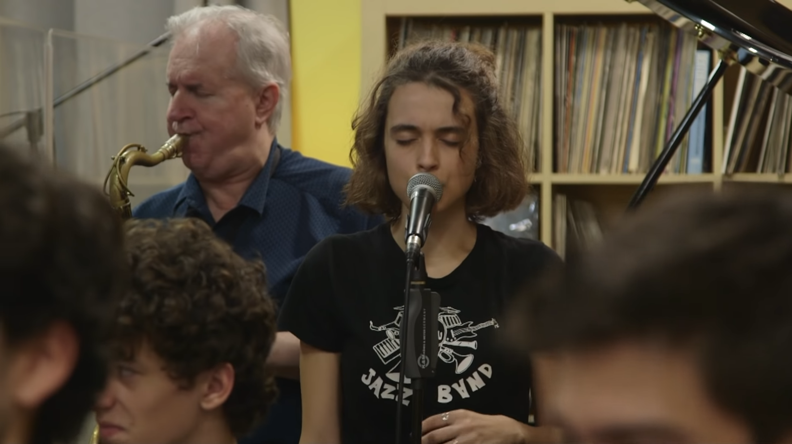

Day 30

Joan Chamorro presenta, Alba Armengou & Scott Hamilton & Sant Andreu Jazz Band - Shiny Stockings
主唱Alba Armengou不光声音吸引人，长相也可爱。有评论说她的声音sweet & smoky，我深以为然，特别是低音上。编曲也明白这点，给她的歌曲都有可以发挥的低音段落。一开始我以为“crazy hue”是“crazy heel”，还说这姑娘发音好有感觉（很懂嘛）www。吹萨克斯的老爷爷和弹钢琴的小哥也很棒，只不过没有主唱可爱，这里就不多说了。
这个表演缺了一个关键的东西，显得不大完整：没有观众的欢呼。结束的时候每次都感觉少了东西。有的人可能喜欢“干净”的表演，但果然没有观众的欢呼互动就没有感觉啊。
最近听了不少爵士曲子，之后还有几首想要分享。
Those silk shiny stockings
That I wear when I'm with you
I wear 'cause you told me
That you dig that crazy hue
Do we feel the romance
When we go to the dance
Oh no, you take a glance
At those shiny stockings
Then came along some chick
With great big stockings, too
When you changed your mind about me
Why, I never knew
I guess I'll have to find
A new, a new kind
A guy who digs my shiny stockings, too
Then came along some chick
With great big stockings, too
When you changed your mind about me
Why, I never knew
I guess I'll have to find
A new, a new kind
A guy who digs my shiny stockings, too
A new guy who digs my shiny stockings, too
演出制作：
Alba Armengou ( voz) Joan Chamorro ( dirección) Scott Hamilton ( invitado especial , saxo tenor ) Joan Martí, saxo alto Joana Casanova, saxo alto Marçal Perramon, saxo tenor Èlia Bastida, saxo tenor Alba Esteban, saxo baritono Joan Mar Sauqué, trompeta Victor Carrascosa, trompeta Elsa Armengou, trompeta Joan Codina, trombon Max Tato, trombon Jan Domenech, piano Carla Motis, guitarra Miquel Casanova, contrabajo Pablo Ruiz, Bateria Grabación David Casamitjana Materización Josep Roig en Temps Rercor Video Ramón Tort